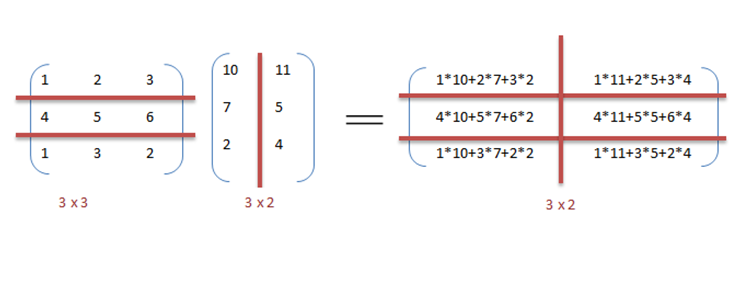
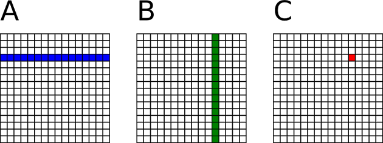

We study the classic problem, 2D matrix multiplication. We will start with a short introduction about the problem and then discuss how to solve it parallel CPUs.
We are multiplying two matrices, A (MxK) and B (KxN). The numbers of columns of A must match the number of rows of B. The output matrix C has the shape of (MxN) where M is the rows of A and N the columns of B. The following example multiplies a 3x3 matrix with a 3x2 matrix to derive a 3x2 matrix.

As a general view, for each element of C we iterate a complete row of A and a complete column of B, multiplying each element and summing them.

We can implement matrix multiplication using three nested loops.
At a fine-grained level, computing each element of C is independent of each other. Similarly, computing each row of C or each column of C is also independent of one another. With task parallelism, we prefer coarse-grained model to have each task perform rather large computation to amortize the overhead of creating and scheduling tasks. In this case, we avoid intensive tasks each working on only a single element. by creating a task per row of C to multiply a row of A by every column of B.
Instead of creating tasks one-by-one over a loop, you can leverage Taskflow::for_each_index to create a parallel-for task. A parallel-for task spawns a subflow to perform parallel iterations over the given range.
Please visit Parallel Iterations for more details.
Based on the discussion above, we compare the runtime of computing various matrix sizes of A, B, and C between a sequential CPU and parallel CPUs on a machine of 12 Intel i7-8700 CPUs at 3.2 GHz.
| A | B | C | CPU Sequential | CPU Parallel |
|---|---|---|---|---|
| 10x10 | 10x10 | 10x10 | 0.142 ms | 0.414 ms |
| 100x100 | 100x100 | 100x100 | 1.641 ms | 0.733 ms |
| 1000x1000 | 1000x1000 | 1000x1000 | 1532 ms | 504 ms |
| 2000x2000 | 2000x2000 | 2000x2000 | 25688 ms | 4387 ms |
| 3000x3000 | 3000x3000 | 3000x3000 | 104838 ms | 16170 ms |
| 4000x4000 | 4000x4000 | 4000x4000 | 250133 ms | 39646 ms |
The speed-up of parallel execution becomes clean as we increase the problem size. For example, at 4000x4000, the parallel runtime is 6.3 times faster than the sequential runtime.